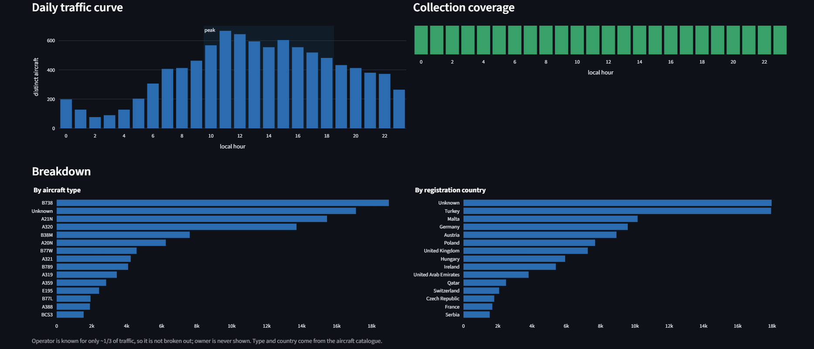

A live map of the planes over Central Europe, backed by a data warehouse that records the sky every two minutes.
For anyone curious about the sky above them — and developers who want to see a real data pipeline behind the picture.
Why: the OpenSky API tells you what is in the air right now. It can't tell you what was there last Tuesday. So I keep the history the API throws away.
The demo — from a real run
Three commands, one live map
flights ingest --once
landed (raw): 487
accepted: 487 rejected: 0
flights build
staging / positions / transits / coverage ok
last 24h: ~1,240 segments, 87% known type
Numbers are today's measurement. A clean live feed means ~0 rejects — that is a result, not a gap.

Open the dashboard, pick a day → 3D hexagon density map, the hour-by-hour curve, and where collection had gaps.
Why it works
I set the rules; the agent worked inside them
Every decision is logged.PLANNING_LOG.md is append-only, each line marked decided by: user or agent — I chose the schema grain, the reject rules, the scope.
I wrote the checks. A regression test fixes the warehouse's transit count to a band I measured by hand; a change that moves it fails the test and can't ship.
A rule I enforced. The collector (ingest.py) is frozen — a day lost can never be backfilled, so the agent never touches it.
One small PR per change, and I merged every one. I ran every write to the live server myself.
What I learned — one concrete moment
The silent 13-day freeze
On Nov 15 the dashboard still showed Nov 3. The collector was alive and losing nothing — but the hourly warehouse build had failed silently for 13 days.
Cause: a leftover <flights-ce> placeholder in .env broke the build script that read it — and the same line killed the alert that should have caught it.
The lesson: a monitor that can die the same way as the thing it watches is not a monitor. I learned to check collector-liveness and warehouse-freshness separately, fixed it, caught up the backlog, and hardened the scripts so one bad line can't abort the build again.
What's next
From live to lasting
Freeze a permanent public copy. When collection ends, ship the offline dashboard to Streamlit Community Cloud from a few-MB snapshot — no server needed.
Decide the long-term home (~Feb). Keep it live on a free always-on VM, or keep it on the cheap VPS — the plan is written down either way.
Keep collecting. Every extra week makes the seasonal questions richer; the warehouse was useful after day one.